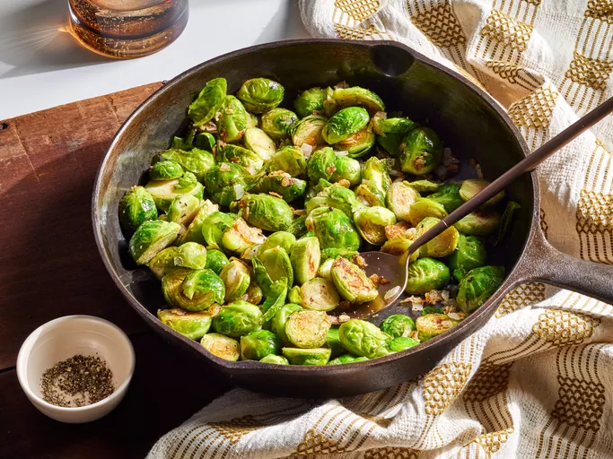

Pan Fried Brussels Sprouts

Description
These fried Brussels sprouts are easy to make and so delicious! Pan-frying them brings out their flavor and they make a colorful green side dish for the holidays.
Home cooks love how easy and flexible this recipe is.
Ingredients
- 1 tablespoon olive oil
- 2 teaspoons crushed garlic
- ¼ white onion, chopped
- 1 pound trimmed Brussels sprouts
- salt and ground black pepper to taste
- 1 pinch garlic powder, or to taste
Steps
- Gather the ingredients.
- Heat olive oil in a cast-iron skillet over medium-low heat. Add garlic and stir until golden brown and fragrant, about 2 to 3 minutes. Add onion and cook until soft, stirring often, about 5 minutes.
- Add Brussels sprouts and cook until one side of the sprouts turns golden brown, 5 to 7 minutes.
- Stir to turn sprouts over and cook until evenly golden brown, another 5 to 7 minutes. Season with salt, black pepper, and garlic powder.
Home